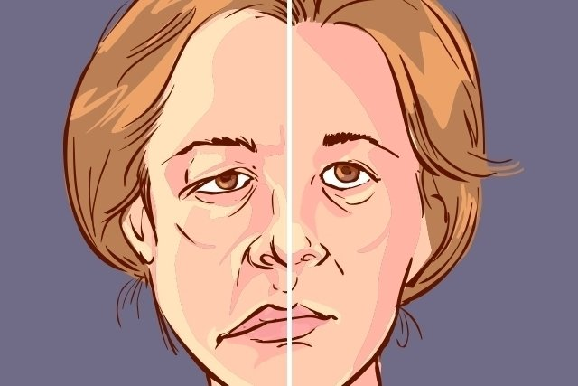

Worst Batches in each Symptom Class
home |
Booster Warnings by Month |
Moderna |
Pfizer |
Janssen |
Moderna (outside USA) |
Pfizer (outside USA) |
Janssen (outside USA) |
Severe |
Symptom |
Treatment |
Children |
Clusters |
All or Nothing |
Time till onset |
Gender |
Geography |
States |
Causality |
Japan |
Sweden |
Video Library |
Case Reports |
Lot Sizes |
Lot Expiry Dates |
Whistle Blowers |
Data Cleaning |
Background |
Download Source Code |
Donate
If this site is slow loading that's because over 1 million people are accessing it right now. Please use auxillary site HowBadisMyBatch.com which has been set up to cope with this overload. Thankyou.
Worst Batches by Symptom
Here are the cases we will look at initially. They are all cases of nerve damage following vaccination. Brief definitions are provided for these maladies below. I will determine which batches are associated with the highest number of cases.
DATA SOURCE : World Health Organisation Vigiaccess Database : Nervous System Disorders | (enter "COMIRNATY" into search box)
- Facial Paralysis : 11,525 cases
- Facial Paresis : 3366 cases
- Paresia/ Paresis : 589 cases
- Hemi Paresia : 3366 cases
- Mono Paresia : 950 cases
- Paraparesis : 210 cases
- Paralysis : 2949 cases
- VIth Nerve Paralysis : 250 cases
- IIIrd Nerve Paralysis : 154 cases
- Bells Palsy : 8,605 cases
- Peroneal Nerve Palsy : 240 cases
----------------
- Multiple Sclerosis : 980 cases
- Multiple Sclerosis relapse : 872 cases
- Transverse Myelitis : 664 cases
- Acute Disseminated encephalomyelitis : 291 cases
- Demyelination : 407 cases
- Guillain Barre Syndrome : 4,552 cases
----------------
- Parkinson's Disease : 223 cases
- Tremor : 41,027 cases
- Seizure : 13,664 cases
- Partial Seizures : 365 cases
- Seizure like phenomena : 585 cases
- Febrile Convulsion : 620 cases
- Epilepsy : 3270 cases
- Petit mal epilepsy : 361 cases
- Facial Spasm : 363 cases
- Coma : 627 cases
Some Definitions
- Bells Palsy : 8605 cases - facial muscle weakness or paralysis. It begins suddenly and worsens over 48 hours. This condition results from damage to the facial nerve (the 7th cranial nerve). Pain and discomfort usually occur on one side of the face or head. VIDEO

- Guillain Barre Syndrome : 4552 cases - a disorder in which your body's immune system attacks your nerves. Weakness and tingling in your extremities are usually the first symptoms. These sensations can quickly spread, eventually paralyzing your whole body.
- Tremors : 41,027 cases
VIDEO
VIDEO
VIDEO